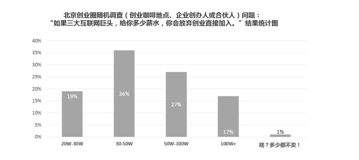
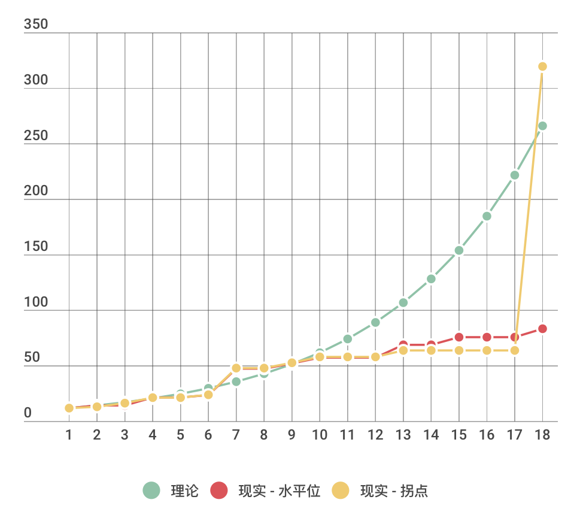

- 00 开篇词 程序行知：走在同样的路上，遇见自己的风景.md.html
- 01 初心：为什么成为一名程序员？.md.html
- 02 初惑：技术方向的选择.md.html
- 03 初程：带上一份技能地图.md.html
- 04 初感：别了校园，入了江湖.md.html
- 05 架构与实现：它们的连接与分界？.md.html
- 06 模式与框架：它们的关系与误区？.md.html
- 07 多维与视图：系统设计的思考维度与展现视图.md.html
- 08 代码与分类：工业级编程的代码分类与特征.md.html
- 09 粗放与精益：编程的两种思路与方式.md.html
- 10 炫技与克制：代码的两种味道与态度.md.html
- 11 三阶段进化：调试，编写与运行代码.md.html
- 12 Bug的空间属性：环境依赖与过敏反应.md.html
- 13 Bug的时间属性：周期特点与非规律性.md.html
- 14 Bug的反复出现：重蹈覆辙与吸取教训.md.html
- 15 根源：计划的愿景——仰望星空.md.html
- 16 方式：计划的方法——脚踏实地.md.html
- 17 检视：计划的可行——时间与承诺.md.html
- 18 评估：计划的收获——成本与收益.md.html
- 19 障碍：从计划到坚持，再到坚持不下去的时候.md.html
- 20 执行：从坚持到持续，再到形成自己的节奏.md.html
- 21 信息：过载与有效.md.html
- 22 领域：知识与体系.md.html
- 23 转化：能力与输出.md.html
- 24 并行：工作与学习.md.html
- 25 时间：塑造基石习惯（上）——感知与测量.md.html
- 26 时间：塑造基石习惯（下）——切割与构建.md.html
- 27 试试：一种“坏”习惯.md.html
- 28 提问：从技术到人生的习惯.md.html
- 29 偏好：个人习惯的局限与反思.md.html
- 30 写作：写字如编码.md.html
- 31 画图：一图胜千言.md.html
- 32 演讲：表达的技术.md.html
- 33 定义：阶梯与级别.md.html
- 34 晋升：评定与博弈.md.html
- 35 关系：学徒与导师.md.html
- 36 核心：安全与效率——工程技术的两个核心维度.md.html
- 37 过程：规模与协作——规模化的过程方法.md.html
- 38 思维：科学与系统——两类问题的两种思维解法.md.html
- 39 职业倦怠：如何面对？.md.html
- 40 局部最优：如何逃离？.md.html
- 41 沟通之痛：如何改变？.md.html
- 42 技术停滞：如何更新？.md.html
- 43 无法实现：困扰与反思.md.html
- 44 完成作品：理想与现实.md.html
- 45 代码评审：寄望与哀伤.md.html
- 46 人到中年：失业与恐惧.md.html
- 47 该不该去创业公司？.md.html
- 48 该不该接外包？.md.html
- 49 技术干货那么多，如何选？.md.html
- 50 技术分歧，如何决策？.md.html
- 51 技术债务，有意或无意的选择？.md.html
- 52 选择从众，还是唯一？.md.html
- 53 选择工作，还是生活？.md.html
- 54 侠客行：一技压身，天下行走.md.html
- 55 江湖路：刀剑相接，战场升级.md.html
- 56 御剑流：一击必杀，万剑归心.md.html
- 57 三维度：专业、展现与连接.md.html
- 58 三人行：前辈、平辈与后辈.md.html
- 59 三角色：程序员、技术主管与架构师.md.html
- 60 三视角：定位、自省与多维.md.html
- 61 工作之余，专业之外.md.html
- 62 跨越断层，突破边界.md.html
- 63 成长蓝图，进化跃迁.md.html
- 尾声 始于知，终于行.md.html
- 捐赠
04 初感：别了校园，入了江湖
每年七月，盛夏，一种火辣兼有闷润的热，但在这份热辣中也有一丝略显冰凉的愁绪。一批刚毕业的学生，将要告别校园，进入职场：一个新的江湖。
一到毕业季，就会经常看到一些转发给新入行程序员的“老司机”指南，老实说，这些指南不少都是金玉良言。当年我毕业新入行时可不像现在有这么多发蒙解惑的“老司机”指南，所以坑都没少踩，若说有什么坑没掉进去，那一定都是因为运气。
当毕业生们看到前路如此多坑时，其实也不必有太大的心理压力，毕竟成长之路不可能是轻松的。我也是这样一路走过来的。所以，这篇就不写关于坑的指南了，而是分享一些我的故事和感悟，给刚踏上征程的你或你们吧。
重剑无锋
作为一名新入职的程序员，首要之事就是配备一台电脑。
这个时代基本都是标配笔记本了，近年公司给配的电脑都很不错了，程序员全是高配大屏的 Macbook Pro 了。遥想我第一份工作，领到的是一个二手华硕笔记本，应该是上一个离职的前辈用了好几年的，这也是我的第一个笔记本电脑。
程序员就应该配笔记本电脑，为什么必须是笔记本电脑？不可以是台式机吗？笔记本电脑之于程序员，就像剑之于剑客。剑客的剑是不应该离开身边的，稍有风吹草动，听风辨器，拔剑出鞘（程序员一声不发就掏出笔记本开始写代码）。
当招程序员时，若来者不问公司配备什么笔记本，一般也就属于大多数的普通程序员啦，不太可能是那种 “不滞于物，草木竹石均可为剑” 的独孤求败级高手。
但也会有少数人问公司配什么笔记本电脑的，当对公司提供的笔记本感觉不满意时，就会要求是否可以自备笔记本电脑，而由公司给予补贴。
后一类同学，对环境、工具和效率是敏感的，我觉着就会比前面那类要强，当然我没有具体统计数据，也是纯凭感觉。
我毕业那年，腾讯来学校招聘，本科年薪六万，硕士八万，博士十万，都是税前。那时我心中最好的笔记本应该还是 IBM 的 ThinkPad T 系列，最差也得 10000+ 起的价格吧。但现在年薪十万在一线的北上广深算相当普遍了吧？而笔记本还是一万，所以能买到很不错的笔记本已经不是什么难事了。若现在的公司再在程序员的 “剑” 上琢磨省钱那绝对是得不偿失了。
我的第一个二手华硕笔记本相比现在的超薄轻快的笔记本，那绝对算是相反的厚重慢了。所以我把它称为 “重剑”，和独孤前辈不同的是，他老人家是先用轻剑，再用重剑，而我是先用重剑，然后越用越轻了。
但只是一年后我换了公司，这把 “重剑” 就还了回去。到了第二家公司，入职后才发现公司不配笔记本电脑，全是台式机。你看，当年我就是那种没问公司配什么电脑的普通程序员，考虑那时确实台式机占据主流，并且笔记本还属于一般程序员至少要两三个月工资才能买得起一台趁手的奢侈品范畴，我也就忍了。
新入职没多久，熟悉了公司环境和老同事交接过来的一个旧系统，公司派我出差去客户现场开发调试。我满心以为出差至少得配个笔记本吧，但组长过来说我们这边出差都带台式机的。然后我看看组长一脸正气不带开玩笑的表情，再看看桌上台式机硕大的机箱和 17 寸的 CRT 显示器，瞠目结舌。
“显示器也要带去？” 我问。- “噢，显示器可以让公司 IT 部给你寄过去，但主机箱要自带，因为快递很容易弄坏。” 组长说。- “好吧…”
对话结束，我立马奔去广州太平洋电脑城，花了之前一年工作攒下来的一万块中的七千，买了一台只有 ThinkPad T 系价位零头的 R 系笔记本，之后这把 “剑” 陪伴了我五年。
初入职场的同学，既然选择了某个公司，最大的因素除了薪酬外，想必每个人都还有这样或那样的在意点。当年我最不满意的就是笔记本这个问题，但从工作第二年开始我一直都是自备笔记本工作，持续多年，没花多少钱，但少了很多折腾和不便。
再后来，我挣得稍微多了些，就又自己换了大内存加固态硬盘（SSD）的 Mac。刚换上 Mac 就惊喜地发现，以前一个 Java 工程编译打包下要 50 多秒，在 Mac 下只需要 20 秒了。考虑写程序的这么多年，每天我要执行多少次编译打包命令，虽然每次节省的时间不多，但总体来看它大大提高了我的效率。
为什么我要单独谈谈笔记本这件小事？因为这是我们程序员每天使用最多的工具，如果你不在乎你的工具，可能你也就不会在乎你的时间和效率。
野蛮生长
现在的公司基本都会给新入职的同学配备一个老员工，俗称 “导师”。
导师制的主要目的是帮助新员工迅速熟悉公司环境和融入团队中。这个初衷自然是没问题的，只是因为导师制其实不算正式的规章制度，更多是一种文化上的强制介入，但很多时候又没有绑定任何利益机制，所以它的效果实际上和个体差异有很大关系。
我觉着新入行的同学，尽量不要去依赖此类导师制。我并不是否定这种机制，而是提醒你不要形成心理依赖，觉着面临问题时，总是有人可以询问和帮忙。职场的第一个台阶就是形成独立性：独立承担职责的能力。这和协作没有冲突，团队协作可以算是履行职责的一种途径和手段。
就以简单的问问题为例，如果只抱着获得答案搞定自己的事情为出发点，一次、两次也就罢了，长此以往是不可行的。因为通过你问出什么样的问题，就可以看出你对这个问题做出了怎样的探索与思考，以及让你困惑的矛盾点在哪里。有些人就喜欢不假思索地问些 Google 都能够轻易回答的问题，形成路径依赖，虽然最终搞定了问题，但换得的评价却不会高，特别要省之戒之。
当你能够问出 Google 都不容易回答的问题时，这可能才是你真正走上职业程序员的开端。
知乎上有个问题：“普通人到底跟职业运动员有多大差距？”里面有个回答，以篮球运动为例给出一个生动的评分体系。假如巅峰时的迈克尔·乔丹算满分 100，那么国内顶级的球员，巅峰时的易建联可能刚刚及格得分在 60～70 之间，而大部分业余选手基本就在 0.1～0.N 之间波动了。
幸运的是程序员这个职业不像运动员那么惨烈，借用上面的评分标准，假如把奠定计算机行业基础的那一批图灵奖得主级别的程序员定义在 90～100 分档，那么我们很多靠编码为生的程序员基本都在 1～10 分档间分布，而业余的只是写写 Demo 的程序员可能就是在 0.1～0.N 之间了。
所以，进入职场后，你需要先把得分从小数提高到整数，再持续努努力提升到两位数，搞不好就成了行业某个垂直细分领域小有名气的专家了。
都不需要及格的分数，程序员就能获得不错的成就感和回报。只需要是巅峰者的十分之一或二十分之一，基本就能超越身边绝大多数人了。望着遥远的巅峰不停地去靠近，翻越身前脚下的一座座小山包，然后不知不觉就超越了自己。
总之，应像野草一样野蛮而快速地生长起来。
青春有价
青春，到底是无价，还是有价？
电影《寒战》里面有个情节，劫匪劫持了一辆警方的冲锋车和五名警员，勒索赎金时让警方自己算一辆冲锋车及其装备外加五名警员的性命值多少钱。然后电影里一阵眼花缭乱的计算得出了最终价格，大约九千多万港币。
后来采访导演问是怎么个算法，导演如是说：
五个警员，若不在事件中死去，由现在到退休期间的十多二十年任职的每月薪酬、房屋及子女医疗津贴、加上假设退休前的职位升迁，香港市民平均年龄以男方 79 岁，女方 85.9 岁的生存上限而计算的长俸，并加上冲锋车流动武器库内的价值、冲锋车本身的车价及保险等最后算出来的总值。
按这么一算，其实一生值不了多少钱啊。
年轻时候嘴边爱唠叨一句话叫：青春无价。其实从我们挣到第一份工资开始，人生就是有价的了。而最黄金时段的青春就在毕业后的十年内，这是大部分人心理和心智走向成熟的阶段，但这十年的价值从市场价格衡量来看是十分有限的。
对于2018 年的毕业生， BAT 三家给出的年薪大约二十万左右，换算到月上每月接近两万了。而另外很大一部分进不了 BAT 三家的毕业生可能平均拿不到那么高，但估计在一线城市一万是差不多的。这样一算，未来十年你觉得能挣多少钱？
喜欢从静止的视角看问题的人一算大概一年十来万，十年也就一百多万，这个收入相对目前一线城市的房价，还能安居乐业吗？
另外思考一个问题：你能在十年后做到相比刚毕业时稳定收入增长十倍吗？也就是说现在月薪一万的人，十年后能月入十万吗？难，非常难。不信我们下面仔细算算。
我们回到用动态的视角看前面那个问题，你持续学习，努力工作，年年涨薪 20%（注意我说的是年年，这很不容易，也许你会说跳一次槽就可能翻倍，但你能年年跳槽翻倍么），十年后你年的收入将是十年前的 6.2 倍，离十倍还有距离，但换算为年薪也有七八十万了。所以要想靠加薪加到月入十万真的是一件极难的事情，而且即使做到了也离我们心中的无价青春，还差很远吧？
认清了这个现实，我们明白了这十年的青春是十分有价的。所以这时有人说了，要去创业，才有可能突破。前两年（2015）都在鼓励万众创业，但真实的现实是，你要给目前的万众创业者一个稳定的七八十万年薪，80%+ 的创业者表示就会放弃创业了，这数据是来自 TOMsInsight 深度观察文《互联网乱世之下，那些人才流动中的心酸和无奈》对 100 个创业者的抽样调查。- 
TOMsInsight 创业者放弃公司的薪水额度抽样调查
那么持续努力的学习还有意义吗？我只是说你很难做到每年加薪 20%，但是却可以做到每年比去年的自己多增长 20% 的知识、见识和能力。而关于知识、见识和能力的积累与相应价值的变现，理论与现实的对比可能如下图，纵坐标：年薪（单位万），横坐标：工作年限。- 
年薪与工作年限概念图
现实不太可能因为你的能力每增长 20% 就会立刻体现在你的收入上。现实有两种可能：一种存在一个拐点让你的积累获得相应的价格体现，另一种也可能不存在这个拐点，停留在某个水平位。其中拐点就是我们现实中常说的机遇吧。
无论怎样，要想获得拐点出现的机遇，可能你也只能持续努力地积累下去。
关于人生的选择，从来都是 All In，可没有股票那种分批建仓的办法，写到这里想起了曾经在网上记录下来的几句话，现分享给你：
我不停的擦拭手中的利剑，不是因为我喜欢它，也不是因为它能带来安全，只是因为，每当下一次冲锋的号角响起时，我能够迅速拔出，纵横厮杀，直至战斗结束，不让自己倒下。- ……- 生活在这样的时代，与其被迫上场，心怀恐惧，不如主动征伐，加入时代的滚滚大潮当中，去见识一下时代的风采，写下自己的故事。
这个江湖会有你的故事吗？
在这里我分享了一些我刚入江湖的故事，那你有怎样的精彩故事呢？欢迎你留言，和我一起分享。
© 2019 - 2023 Liangliang Lee. Powered by gin and hexo-theme-book.